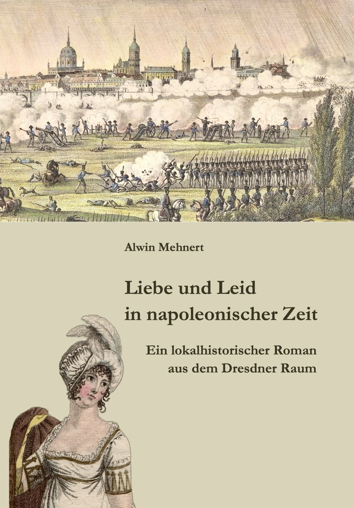

Rund um den Finckenfang · Heft 16
Liebe und Leid in napoleonischer Zeit. Ein lokalhistorischer Roman aus dem Dresdner Raum
Alwin Mehnert · Mit einem Nachwort von Michael Simon · Neu herausgegeben von Michael Simon und Gisela Niggemann-Simon
1. Auflage · Maxen 2025 · 296 Seiten · 9 Abbildungen
ISBN 978-3-9810717-8-8
19,80 €
Zum Inhalt
Der vorliegende Roman von Alwin Mehnert erschien erstmals 1901 unter dem Titel „Welthändel und Herzenskämpfe“. Geschildert werden in dem Buch für die Dresdner Region die schweren Jahre in der napoleonischen Zeit. Mit einem bemerkenswerten schriftstellerischen Talent und profunden lokalgeschichtlichen Kenntnissen gelingt es dem Verfasser, die damaligen Ereignisse in bewegenden Einzelschicksalen zu erzählen und seine Leserschaft gleichzeitig anspruchsvoll zu unterhalten. Die Neuausgabe folgt dem Text der Erstausgabe und wurde mit einem erklärenden Nachwort und einigen Abbildungen versehen. Der Roman spielt unter anderem in Kreischa, Sobrigau, Possendorf, Lockwitz, Röhrsdorf, Dohna, Maxen, Borthen und Dresden.